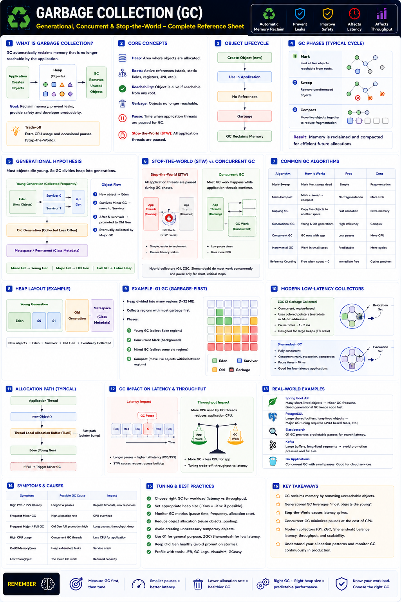

Generational, Concurrent, Stop-the-World — Staff Engineer level
The Big Picture
Modern applications create millions of short-lived objects per second (request objects, DTOs, buffers). Without automatic memory reclamation, applications would run out of RAM. Garbage Collection (GC) reclaims unused objects automatically.
Why GC Exists
Manual memory management in C/C++ (malloc()/free()) causes memory leaks, double-free, dangling pointers, and segfaults. Managed runtimes (Java, Go, .NET) reclaim memory automatically.
Benefits
Trade-offs
Object Lifecycle & Reachability
GC determines alive objects by tracing from GC Roots (thread stacks, static vars, CPU registers, JNI refs). Objects disconnected from all roots become garbage.
Basic GC Cycle: Mark → Sweep → Compact
1. Mark
Find all reachable objects
2. Sweep
Remove unreachable objects
3. Compact
Move live objects together → no fragmentation
Generational GC
Research finding: most objects die young. GC divides the heap into generations to avoid scanning it entirely every time.
Minor GC vs Major GC vs Full GC
| Type | Scope | Frequency | Pause |
|---|---|---|---|
| Minor GC | Young Generation only | Frequent | Small |
| Major GC | Old Generation | Infrequent | Longer |
| Full GC | Entire heap | Rare | Most expensive |
Stop-the-World (STW)
Some GC phases must pause all application threads to maintain heap consistency. During STW: no requests processed, no logic executes, latency spikes.
STW is the primary cause of P95/P99 latency spikes in Java/JVM production services.
Concurrent GC
Modern collectors do most work alongside the running application, with only tiny STW pauses.
Benefits
Lower latency · Better responsiveness
Trade-off
Higher CPU usage for GC threads
Popular GC Collectors
| Collector | Pause Time | Best For |
|---|---|---|
| Serial GC | High | Small applications |
| Parallel GC | Medium | Batch workloads |
| CMS | Low | Legacy low-latency systems |
| G1 GC | Low | General production workloads |
| ZGC | Very Low (~1–2 ms) | Large heaps & real-time systems |
| Shenandoah | Very Low | Low-latency microservices |
G1, ZGC & Shenandoah
G1 GC (Default in modern JVMs)
Divides heap into regions. Collects "Garbage-First" — highest garbage regions first. Concurrent marking + predictable pauses. Good balance of throughput & latency.
ZGC
Almost entirely concurrent. Concurrent mark + relocate. Pause ≈ 1–2 ms regardless of heap size. Best for trading platforms, payments, large heaps (>32 GB).
Shenandoah
Concurrent compaction. Pause time stays nearly constant regardless of heap size. Best for low-latency microservices.
Throughput vs Latency Trade-off
| Strategy | Throughput | Latency |
|---|---|---|
| Parallel GC | Highest | Poor |
| G1 | Balanced | Good |
| ZGC | Slightly lower | Excellent |
| Shenandoah | Good | Excellent |
Concurrent collectors trade a small amount of throughput for significantly lower tail latency.
How GC Affects Latency
Average latency may look fine while tail latency is terrible. Always monitor P99.
Real-World Examples
| System | GC Behavior | Key Concern |
|---|---|---|
| Spring Boot API | High alloc rate → frequent Minor GCs | Poor object reuse increases GC frequency |
| Elasticsearch | Large heap + G1 GC | Predictable search latency via concurrent marking |
| Kafka | Long-lived buffers → Old Gen grows | Reuse buffers to reduce Major GCs |
| Go services | Concurrent GC, tiny pauses | Excellent for cloud-native latency targets |
Staff Engineer Thinking
Junior
Why is memory increasing?
Senior
Is GC running too often?
Staff asks
Production Failure Scenarios
Frequent Minor GC
Cause: High object allocation rate · Fix: Reduce temporary object creation
Long Full GC
Cause: Old Generation exhausted · Fix: Increase heap or reduce long-lived objects
High P99 Latency
Cause: Stop-the-World pauses · Fix: Switch to G1, ZGC, or Shenandoah
High CPU Usage
Cause: Concurrent GC threads consuming CPU · Fix: Balance heap size and GC configuration
Staff Engineer Decision Framework
| Scenario | Recommended GC |
|---|---|
| Small utility application | Serial GC |
| Batch processing | Parallel GC |
| General production service | G1 GC |
| Large JVM heap (>32 GB) | ZGC |
| Low-latency microservices | Shenandoah |
| Cloud-native Go services | Go Concurrent GC |
GC Algorithm Comparison
| Feature | Generational | Concurrent | STW Only |
|---|---|---|---|
| Focus | Young vs Old objects | Background collection | Simplicity |
| Pause Time | Medium | Very Low | High |
| CPU Usage | Medium | Higher | Low |
| Throughput | High | Slightly Lower | High |
| Best For | Most production | Low-latency systems | Small apps |
Production Debugging Checklist
Key Takeaways
